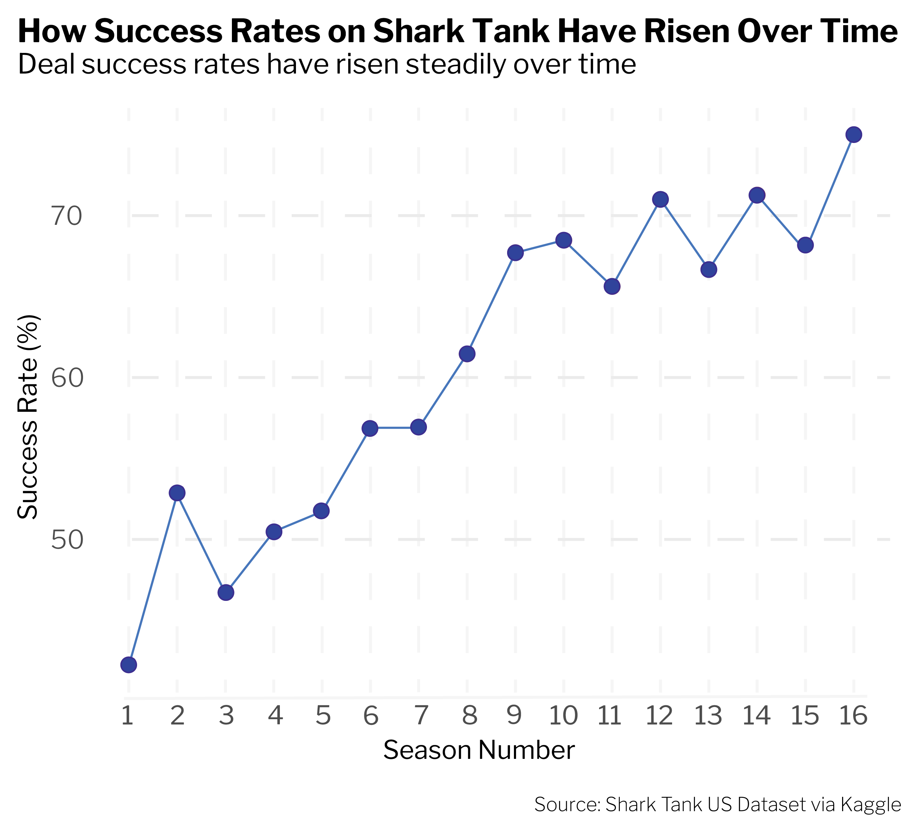
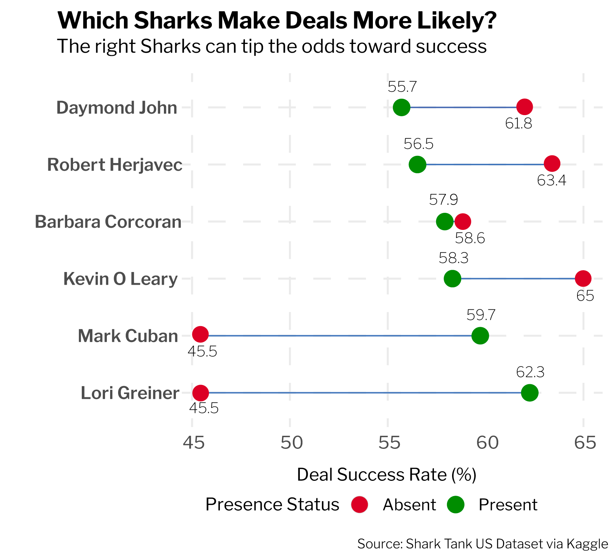
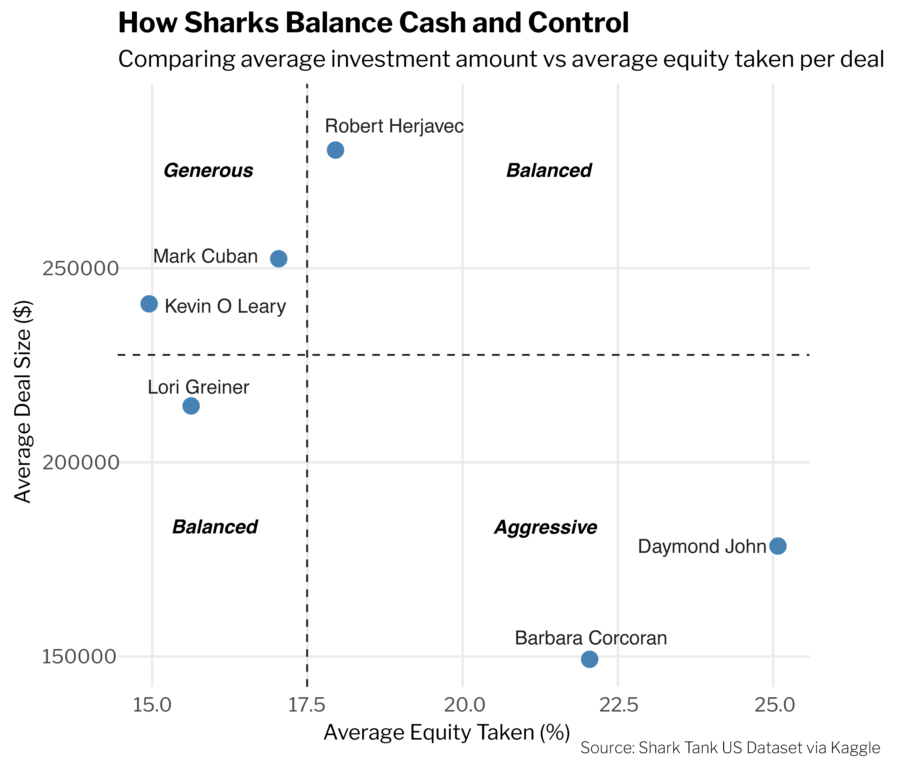

Shark Tank US premiered its first season in 2009. Since then it has come a long way and is now running on its 16th season. It features entrepreneurs pitching their businesses to a panel of five angel investors, known as "Sharks," who then decide whether or not to invest in their startups. At the start of the pitch, the entrepreneur explains their business and other relevant information while Sharks question and try to make a decision within the pitch time. They make offers if they are interested and after some kind of optional negotiation, the entrepreneurs can choose to accept or decline the Sharks’ deal.

I looked at historical data from the show right from the beginning in 2009(Season 1) and upto 2025 (Season 16) and found that the likelihood of an entrepreneur getting a deal from the Sharks has increased significantly. The lowest success rate was in the very first season which stands at approximately 43%. It has steadily increased over time with some ups and downs. In Season 16, we have seen a success rate of over 75%.
This increase in success rates can be attributed to a variety of factors. Namely, one major factor is that entrepreneurs are coming into the tank better prepared. Participants have been watching the show for many years now and have now learned from watching the previous seasons. They have a better understanding of what sharks wanted such as clear financials, realistic valuations and strong margins.
Secondly, as Shark Tank grew more famous and the entrepreneurial spirit grew in America, higher-quality companies started applying. The early seasons had more rough or very early stage ideas. The later seasons saw more established businesses looking to scale and not just ideas needing validation.
Lastly, the sharks themselves I think got better at spotting winners quickly. Some sharks became more open to investing after seeing big returns in companies like Bombas and Scrub Daddy to name a few. Furthermore, the sharks really honed into the collaborative spirit of working and started teaming up on deals with other Sharks present.
Often, entrepreneurs have a shark or a group of sharks they are targeting when looking to sign a deal. A lot of the time entrepreneurs also wonder which Sharks will be present when they pitch their company to them in order to strategically plan out details.

Mark Cuban and Lori Greiner significantly boost entrepreneurs' chances of securing investment, with success rates notably higher when they are at the table. Their presence seems to encourage investments — possibly because they are seen as "friendly" or "active" investors.
The presence of Robert Herjavec, Daymond John, and Kevin O'Leary correlates with a lower deal success rate, suggesting they may be more selective or create tougher negotiation environments. They might push for aggressive terms, scare off entrepreneurs, or discourage group deals.
Barbara Corcoran's presence appears to have a neutral effect on deal outcomes.

Looking at the chart above, we can see how each shark balances their average investment and how much equity on average they take when investing. Kevin O’Leary and Mark Cuban fall in the “generous” quadrant where they tend to give higher investment amounts and charge less in return. One thing to note is that, Kevin O’Leary a lot of the times clubs his equity deals with a royalty which was not taken into account in this analysis. Lori Greiner and Robert Herjavec on the other hand are more balanced with their investments. Lori offers less investment money but also takes less on an average and Robert takes slightly more than the average equity but offers a much higher investment amount than the average investor in Shark Tank. Daymond John and Barbara Corcoran are more aggressive with their investments. They both tend to take much more than the average equity in the tank and also offer much less compared to the average investor in the tank.